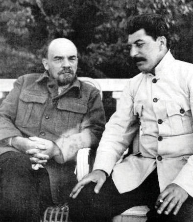
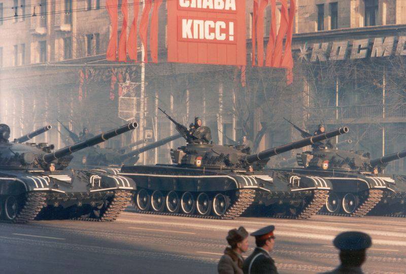
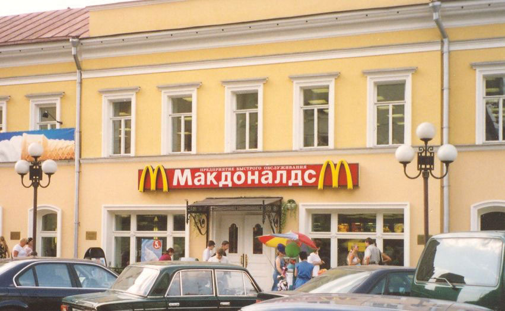
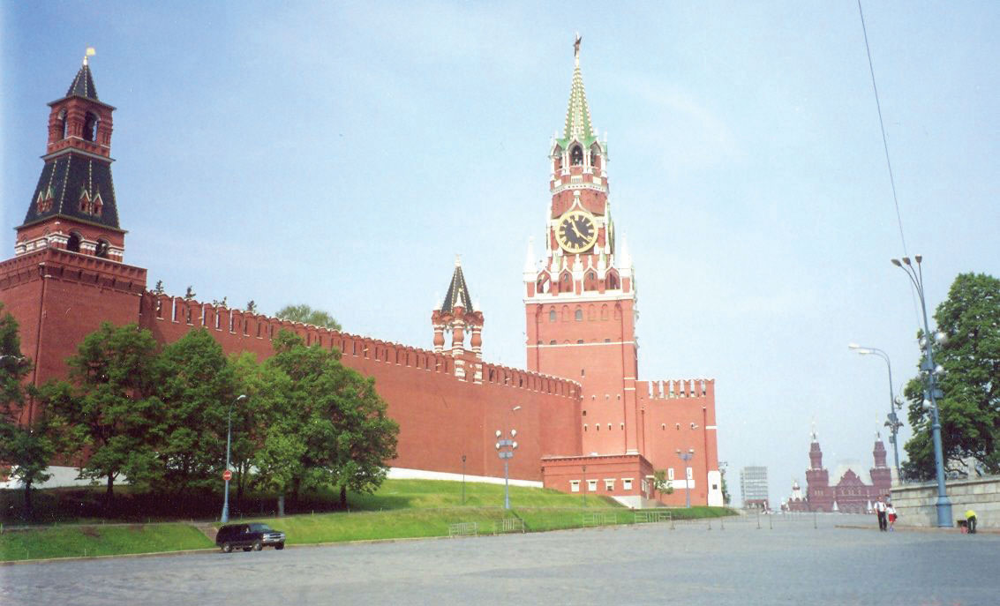
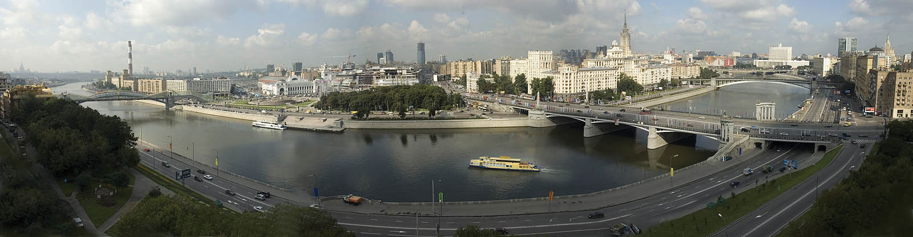
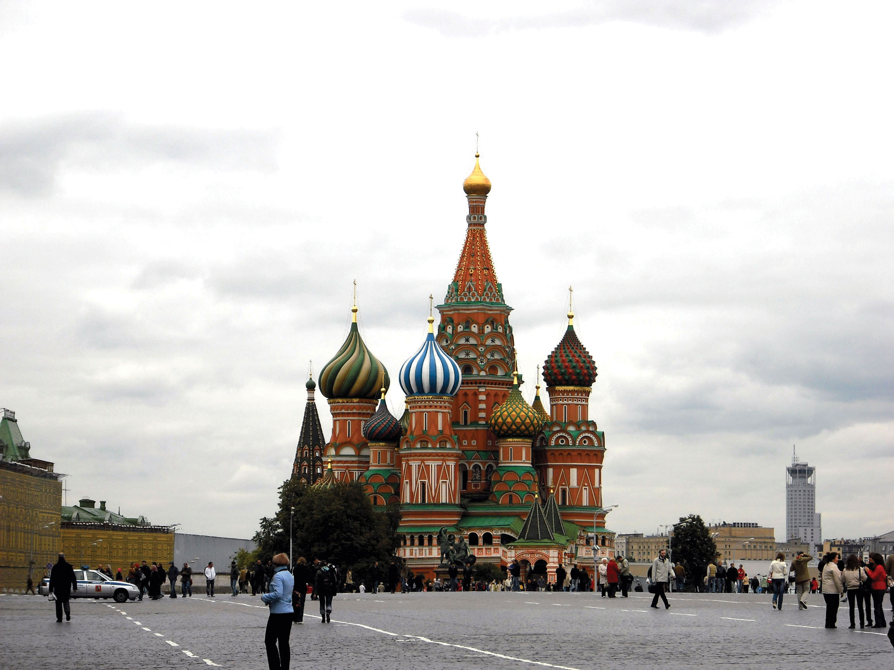
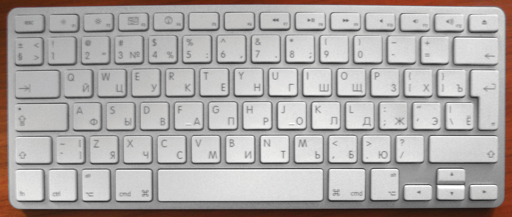

As we learned in Section 3.1 "Introducing the Realm", the Russian Empire was built by the czars over the course of a few hundred years. However, the economic and political systems of the Russian Empire were not sustainable in the modern era. The vast majority of the population were poor, and most were landless peasant farmers—and in a place with short growing seasons, farming was not an easy path to riches. Political decisions were made by a very small elite group. At the dawn of the twentieth century, one hundred years after the Industrial Revolution swept through Great Britain and Western Europe, Russia remained an agricultural country and had not yet begun large-scale industrialization. Outside of the aristocracy, few supported the status quo in Russia, and there was widespread desire for a new political system and government.
However, no one could agree on what a new government would look like. In the aftermath of the First World War, a civil war erupted in Russia. During these chaotic times, the last czar, Nicholas II, was forced from office, and he and his family were executed. The most powerful group battling for control of Russia was a Communist group called the BolsheviksThe political group, led by Vladimir Lenin, that won the civil war in Russia (1917–23) and took control of the new USSR., which literally meant the “larger group.” Other groups, including the “smaller group,” the Mensheviks, lost the civil war. The Bolshevik leader was Vladimir Lenin, and in 1917 he and his supporters embarked on a quest to turn Russia into a Communist state.
The capital city was moved back to Moscow from St. Petersburg, where it had been since the time of Czar Peter the Great in the eighteenth century. St. Petersburg’s name was changed to Petrograd and then Leningrad in honor of Vladimir Lenin, as the atheist Soviets did not want any references to Christian saints. The entire territory of the Russian Empire was turned into the Union of Soviet Socialist Republics (USSR). The Russian people traded a monarchy for a Marxist totalitarian state (see the explanation of Marxism in Section 3.2.1 "Marxist-Leninist Central Planning").
Figure 3.5 Vladimir Lenin and Josef Stalin, 1922
The Soviet Union lasted from 1922 to 1991. Josef Stalin, the Soviet dictator who took over after Lenin, was incapacitated in 1922 (and died in 1924). He was a ruthless leader who murdered his way to power and killed or exiled anyone who got in his way. Stalin is famous for initiating economic plans that helped move Russia from a poor, agrarian state to a large, industrial superpower. He pushed for rapid industrialization, the eradication of family farms in lieu of large communal farms, the end of personal ownership of land or businesses, and the dramatic weakening of organized religion. All these changes came at a great price. During his reign of terror, an estimated thirty million people lost their lives. The forced collectivizationThe process of taking privately owned farms, merging them with other farms and turning them over to government control. This took place in the USSR in the 1930s. of agriculture brought about a devastating famine in 1932–33, in which between six and eight million people starved to death or were killed outright, many of them in Ukraine. Stalin led periodic purges of his perceived political enemies. The largest of these is known as the Great PurgeThe largest of Soviet leader Josef Stalin’s purges of his perceived political enemies. From 1936 to 1938 he had about one million “enemies of the state” executed.. At that time (1936–38), about one million so-called enemies of the state were executed. More people lost their lives under Stalin than in all the concentration camps of Adolf Hitler’s Nazi regime. The full extent of Stalin’s purges of his people may never be fully known. Stalin’s rule ended in 1953, when he reportedly died of natural causes. However, some historians believe he was poisoned by his close associates.
Table 3.1 Soviet Leaders and Russian Presidents
| Soviet Union Leaders | Time as Leader | Life Span |
| Vladimir Ilich Ulyanov (Lenin) | 1917–24d | 1870–1924 |
| Josef Vissarionovich Djugashvili (Stalin) | 1924–53d | 1879?–1953 |
| Nikita Sergeyevich Khrushchev | 1953–64 | 1894–1971 |
| Leonid Ilyich Brezhnev | 1964–82d | 1906–1982 |
| Yuri Vladimirovich Andropov | 1982–84d | 1914–84 |
| Konstantin Ustinovich Chernenko | 1984–85d | 1911–85 |
| Mikhail Sergeyevich Gorbachev | 1985–91 | 1931– |
| Russian Federation presidents (1991+) | ||
| Boris Nikolayevich Yeltsin | 1991–99 | 1931–2007 |
| Vladimir Vladimirovich Putin | 2000–2008 | 1952– |
| Dmitry Anatolyevich Medvedev | 2008– | 1965– |
| d = died while in office | ||
|---|---|---|
The Soviet Union espoused the philosophies of Karl Marx, a nineteenth-century German theorist. Marx wrote that all political and economic life can be understood as a struggle between the various classes in society. People who adhere to Marx’s philosophy are called Marxists, and the Soviet version of Marxism is called Marxism-Leninism. In Marxist thought, capitalismAn economy based on the free market. is an oppressive economic system in which the working class (the proletariatIn Marxist theory, the working class of society.) is oppressed by the bourgeoisieThe wealthy middle class of a capitalist society. (the wealthy middle class). Marxists believe that the proletariat should revolt, rise up against the bourgeoisie, take the property away from the rich, and give it to the government to control it for the benefit of the common people. Ultimately, a pure CommunistIn theory, a system in which there are no economic classes and economic resources are shared equally by all members of society. In practice, this term describes socialist countries such as the USSR. system would result, with no social or economic classes, no private property, no rich people, and no poor people. In real life, governments that adopt these ideas practice socialismAn economic and political practice in which the government owns the means of economic production, distribution, and exchange. Socialism is thought to be a step on the path to Communism. and are said to be socialist.
As a socialist state, the Soviet Union did not include open markets. The Soviet Union was a command economyAn economy in which economic decisions are made by a central authority and not according to market demands., in which economic decisions were made by the state and not left to the market to decide. During the Soviet era, for example, industrial production was planned by the central government. The government would decide what would be produced, where it would be produced, the quantity produced, the number of workers who would produce it, where the raw materials would come from, and how the final product would be distributed. By mobilizing the entire country to work toward common goals, the USSR was able to achieve the rapid industrialization that it so desired. However, the Soviets underestimated the power and efficiency of free-enterprise capitalism, and their socialist system was undermined by waste, fraud, and corruption.
Another main economic feature of the Soviet Union was collectivized agriculture. The Soviet leaders did not want individual, capitalist farmers to become rich and threaten their economic system. Nor did they want thousands of small, inefficient farms when the country was perpetually unable to feed itself. Instead, they decided to streamline agricultural production into large farm factories. All the farmland in each area was consolidated into a government-owned collective operation. Some collective farms were run by the state, while others were run by private cooperatives. During the transition period to collective farming, individual farmers were forced to give up their land, animals, farm equipment, and farm buildings and donate them to the collective farm in their area. The state also demanded a high percentage of the crops produced. At times, the government collected the entire harvest, not even allowing seed crops to be held for the following season. This brought about widespread famine in 1932–33. Collectivized agriculture remained the norm in the Soviet Union until the country’s dissolution in 1991 and even afterward in some areas.
From the end of World War II in 1945 until the collapse of the USSR in 1991, the Soviet Union and the United States competed in the global community for the control of labor, resources, and world power. Each side attracted allies, and most countries were on the side of either the United States or the Soviet Union; very few remained neutral. This era, known as the Cold WarThe protracted competition for military strength, scientific prowess, economic growth, and control of resources between the United States and the Soviet Union and their respective allies from 1945 to 1991., did not involve direct military armed conflict between the United States and the Soviet Union, but it transformed the world into a political chessboard, with each side wanting to block the other side from gaining ground. Whenever the Soviets would enter into an alliance with a certain country, the United States was right there to try to counter the move. Wars, armed conflicts, sabotage, spying, and covert activities were the methods of the Cold War. Both sides stockpiled as much deadly weaponry as possible, including nuclear warheads and missiles. They also competed in the race to put people in outer space.
Figure 3.6 October Revolution Celebration 1983, Moscow, during the Cold War
Source: Photo courtesy of Thomas Hedden, http://commons.wikimedia.org/wiki/File:October_Revolution_celebration_1983.png.
The Cold War led to wars fought in Vietnam, Korea, Grenada, Afghanistan, Angola, and the Middle East, with the Soviet Union funding one side and the United States supplying the other. Covert wars or guerilla wars with secret agents and political assassinations were fought in Cuba, Nicaragua, Chile, Guatemala, Mozambique, Laos, Cambodia, and a host of other third-world countries. The Cold War divided the world into two main camps, each with a high number of nuclear weapons. Eastern Europe was sectioned off by the Iron Curtain, and the Berlin Wall divided the city of Berlin, Germany. These physical barriers divided the communist countries of Eastern Europe with the capitalist democracies of Western Europe. Germany itself was divided into two separate countries, as explained in Chapter 2 "Europe".
Various Soviet dictators came to power and died in office before the end of the Cold War. The last Soviet leader was Mikhail Gorbachev, who assumed power in 1985. The US president at the time was Ronald Reagan. During the 1980s the United States was outspending the Soviets militarily, and its economy was growing at a much faster rate than that of the USSR. At the same time, the Soviets were engaged in a costly war in Afghanistan, and their economy was faltering and in danger of collapse. Gorbachev realized that reforms had to be implemented to modernize the Soviet system: political life needed to be more open so that people would feel ownership of the country, and the economy needed to be restructured. Gorbachev implemented perestroikaThe Russian word for “restructuring”; a campaign carried out by Soviet leader Mikhail Gorbachev in the 1980s to add market components to the Soviet economy. (restructuring of the economy with market-like reforms) and glasnostRussian word for “openness”; a program to foster political transparency and openness carried out by Soviet leader Mikhail Gorbachev in the 1980s. (openness and transparency of all government activities). The restructuring exposed fundamental problems in the economy, and by 1990 the Soviet economy was in worse shape than ever before.
Figure 3.7
The first McDonald’s restaurant in the former Soviet Union was in Moscow, Russia.
Source: Photo courtesy of Mary Krueger.
The end came in 1991: the Soviet Union collapsed when fourteen of the Soviet republics broke away and declared their independence. At this point, the Soviet state was too weak to prevent it. All the republics, including Russia itself (now called the Russian Federation), became independent countries. The only territories that did not achieve independence were the smaller republics and autonomous regions that existed within the Russian Federation’s boundaries. The Iron Curtain melted away seemingly overnight, and people were free to travel to and from the former Communist countries. The old Russian flag flew over the KremlinThe seat of the Soviet, and then Russian, government. The Russian word for a fortress or walled city, the Kremlin is the ancient fortress in Moscow.—the seat of the Russian government—for the first time since Czar Nicholas II had been in power seventy-three years earlier. The Communist era of the Soviet Union and the Cold War were over.
Figure 3.8 Walls of the Kremlin in Moscow
Kremlin is a Russian word for a walled city. Inside Moscow’s Kremlin is the famous Red Square.
Source: Photo courtesy of Mary Krueger.
The post-Soviet transition was filled with political, economic, and social turmoil. Boris Yeltsin, the first president of the new Russian Federation, ushered in a series of economic reforms that privatized state-owned enterprises. Russian leaders tried to reverse socialism rapidly through what they called “shock therapyThe process of rapid privatization and the move to market capitalism after the Soviet Union’s collapse.,” which they knew would be painful but hoped would be brief. These reforms created a new class of capitalist entrepreneurs.
Wealth, once controlled by the political elite, was now being shifted to the business elite, a pattern found in most capitalist countries. Many ordinary workers faced unemployment for the first time as the new owners of various companies trimmed unnecessary staff. Private ownership forced housing costs to skyrocket, and while families were generally allowed to keep the homes they already lived in, purchasing houses or condominiums became out of reach for many people. The value of the ruble, Russia’s currency, declined rapidly, and older people watched as their life savings evaporated overnight. Western goods were more easily accessible, and all kinds of consumer products became much more widely available than they were during the Soviet era. Bread lines and empty store shelves became distant memories as the former Communist state shifted over to a type of capitalist democracy. Yeltsin became increasingly less popular as citizens became dissatisfied with corruption and the high social costs of the post-Soviet transition. He resigned in 1999 and was replaced by Vladimir Putin.
The Region’s Early Heritage
Czarist Russia, 1547–1917
Bolshevik Revolution, 1917–22
The Soviet Union (USSR), 1922–91
The Russian Republic, 1991–Present
Figure 3.9 Moscow and the Moskva River
Behind the Borodinsky Bridge on the right are the government buildings of the Russian Federation.
A Russian style of capitalism replaced the social, political, and economic system of the Communist era with a growing market economy. The export of Russia’s vast quantities of natural resources, such as oil, natural gas, and timber, to Europe and the rest of the world helped the country rebound from the economic collapse of the 1990s. Russia has benefited from the recent increase in energy prices, and oil, natural gas, metals, and timber account for more than 80 percent of exports and 30 percent of government revenues. However, Russia still needs to modernize its dilapidated manufacturing base if it is to economically compete against the European Union, North America, or eastern Asia. During Vladimir Putin’s presidency (2000–2008), Russia witnessed substantial economic growth that inspired foreign investors to pump money into the Russian economy and catapulted Moscow into an investment haven and one of the richest cities in the world. In 2008, Moscow claimed to have more billionaires than any other city in the world. Russia has reestablished itself as a major player in the global economy, although much of its population still suffers from poverty and social problems.
Russia’s population grew steadily during the Soviet era, except during periods of famine or warfare, and the country underwent a rural-to-urban shift as farm workers moved to cities to labor in factories. However, when the USSR collapsed, Russia’s population began a steep decline, falling from a peak of 149 million in 1991 to about 143 million in 2005. The trend of low birth rates actually began during the Soviet period. The population decline occurred because birth rates always decline during periods of economic and social crisis as people delay or decide against having children, and the country experienced particularly high death rates because of alcoholism, heart disease, and the collapse of the social safety net. Any time death rates surpass birth rates, a country’s population will decline unless the difference is offset by immigration. Russia’s birth rate was also impacted by very high rates of abortion: in 1992, for example, there were 221 abortions in Russia for every 100 live births.“Historical Abortion Statistics, Russia,” Johnston`s Archive, http://www.johnstonsarchive.net/policy/abortion/ab-russia.html. Although Russia’s population has seemingly bottomed out, the only reason it is not continuing to decline is immigration from the former Soviet republics. Russia still has a negative rate of natural increaseCrude birth rate minus the crude death rate. If it is positive, then the population is growing; if it is negative, then the population is in decline. This does not take immigration into consideration as a component of population change..
To put Russia’s demographic profile in context, its fertility rate was only about 1.5 in 2010, meaning that the average woman would have 1.5 children in her lifetime. This is below the 2.1 children each woman would need to have for the population to remain stable. The fertility rate in Russia is similar to that of countries in Europe (1.5) but lower than that of the United States (2.1).“The World Factbook,” Central Intelligence Agency, https://www.cia.gov/library/publications/the-world-factbook/geos/xx.html. Life expectancy for Russian men is variously reported as sixty years up to sixty-three years, while women can expect to live seventy-three to seventy-five years. In Western Europe, life expectancies are about eighty years.
About 80 percent of Russia’s population is ethnically Russian. The next largest group is Tatar (3.8 percent), a group that traditionally has spoken the Tatar language and practiced Islam. More than 150 ethnic groups are represented in Russia, including indigenous people of the Arctic who herd reindeer for a living. Each of the nationalities of the former Soviet republics has a presence in Russia, and because of its relatively strong economy, Russia (especially Moscow) is an immigration magnet for residents of those countries. Most of these groups have their own language and cultural traditions.
Figure 3.10 The Cathedral of Intercession of the Virgin on the Moat, Also Known as the Cathedral of St. Basil the Blessed, on the Red Square, Moscow
Source: Photo courtesy of Stoljaroff, http://commons.wikimedia.org/wiki/File:Pyh%C3%A4n_Vasilin_katedraali.jpg.
The Russian Orthodox Church is the dominant religious denomination in Russia. For generations, it was the country’s official religion, and Russian people were automatically considered to be Orthodox, no matter what their personal beliefs. During the Soviet era, the government did much to weaken the church, including killing tens of thousands of priests, monks, and nuns and closing most churches. The much smaller church that survived was largely controlled by the state. Because of state-sanctioned atheism during the Soviet era, only 15 to 20 percent of Russia’s population today actively practices Orthodoxy, although a much greater number claim to be Russian Orthodox Christians. Another 15 percent of the country’s population practices Islam, especially in places such as the Caucasus region and the southern Ural Mountains, and about 2 percent practice other forms of Christianity, such as Catholicism and Protestantism.“The World Factbook,” Central Intelligence Agency, https://www.cia.gov/library/publications/the-world-factbook/geos/xx.html. Even though Orthodoxy is practiced by a minority of Russia’s population, the church has increased its influence since 1991 and often acts as an official church. A small percentage of the population are Buddhists, and various ethnic groups in Siberia and the Far East practice tribal religions and pagan rites.
Like English, Russian is an Indo-European language. Russian is on the Slavic branch of the language tree, along with languages such as Polish, Ukrainian, and Serbo-Croatian. A relatively new language, it developed from a language called Old East Slavic that was spoken around 1100 CE. Medieval Russian developed in the thirteenth century, and modern literary Russian is usually traced back to the early nineteenth century. Russian uses the Cyrillic alphabet, which was developed from Greek. The Russian language is the official language of the Russian republic. With over one hundred languages used in the country, twenty-seven of them are officially recognized in various regions within the republic.
Figure 3.11 Apple Keyboard for a Russian Computer
Source: Photo courtesy of Iwan Gabovitch, http://www.flickr.com/photos/qubodup/4611704224.
Identify the following key places on a map: